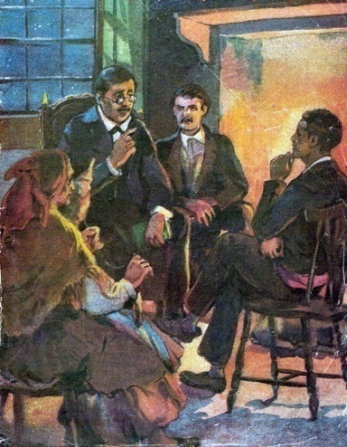
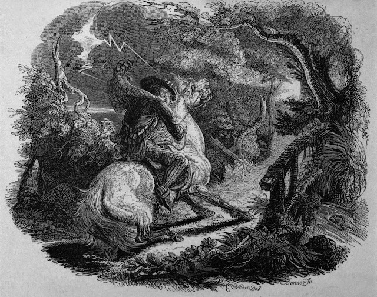
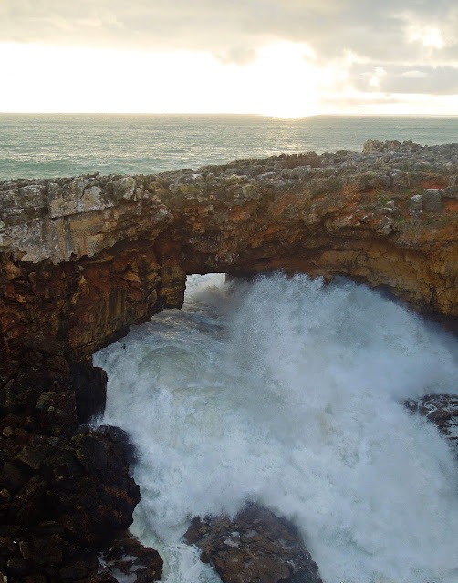

<!DOCTYPE html>
<html lang="en">
<head>
    <meta charset="UTF-8">
    <meta name="viewport" content="width=device-width, initial-scale=1.0">
    <script src="https://cdn.jsdelivr.net/npm/marked/marked.min.js"></script>
    <title>Dança</title>
</head>
<body>
    <div id="content"></div>
<script>
    const markdownText = `# PAINEL DE MITOLOGIA

## Resta-nos esperar que os que ainda conhecem muitas dessas lendas, as continuem a contar e a passar de geração em geração.

Images:





## Lenda da Moura da Ponte de Chaves

Reza a lenda de Chaves que no século XII, uma jovem de origem moura ficara noiva do primo, Abed, filho de um guerreiro mouro que tinha sido feito alcaide depois da retoma das terras Flavienses pelos mouros. A jovem, apesar de ter aceitado o noivado, não amava o futuro marido. Anos mais tarde, os cristãos voltaram para reconquistar Chaves, e a jovem moura foi feita refém por um guerreiro cristão. A moura e o cristão apaixonaram-se vivendo felizes, enquanto o seu prometido e o seu tio fugiram de Chaves. Os cristãos ganharam a guerra restabelecendo-se a paz. Abed, que sabia do caso, nunca perdoou, e voltou à cidade vestido de mendigo, para se vingar. Um dia esperou-a na ponte romana de Trajano, quando a viu aproximar-se, pediu-lhe esmola. A moura, que lhe estendeu a mão, cruzou olhares com ele e o mouro rejeitado rogou-lhe a praga dizendo: "Para sempre ficarás encantada sob o terceiro arco desta ponte. Só o amor de um cavaleiro cristão, não aquele que te levou, poderá salvar-te." Ouviu-se um grito de mulher. A jovem tinha reconhecido Abed. Diz-se que a moura desapareceu como por magia, só umas poucas damas cristãs foram testemunhas. Desesperado, o guerreiro cristão que com ela vivia de tudo fez para a encontrar. Procurou incessantemente na ponte e até pagou para que lhe trouxessem Abed vivo para quebrar o encanto. O amado procurou a sua moura por toda a parte mas nunca a encontrou, acabando por morrer de tristeza e saudade, ao fim de alguns anos. A moura encantada da ponte nunca mais foi vista. Anos mais tarde, diz o povo que, numa noite de S. João, passava um cavaleiro cristão pela ponte quando ouviu murmúrios e pedidos de socorro. Então, uma voz de mulher pediu-lhe para descer ao terceiro arco da ponte e dar-lhe um beijo. Mas o cavaleiro hesitou. Tocou no crucifixo que trazia ao peito, recordando-se dos contos que a mãe lhe costumava contar sobre as desgraças de cavaleiros entregues aos feitiços de mouras encantadas. Perante estes pensamentos, olhou para o cavalo, montou-o e partiu, jurando nunca mais ali passar à meia-noite. Assim, ficou a moura da ponte de Chaves encantada para sempre sob o terceiro arco. Diz a lenda que agora, nas noites de São João, é possível ouvir os lamentos da moura encantada, que está eternamente castigada por se ter apaixonado um dia.

### Imagens:


## Lenda da Dama do Pé de Cabra

Desta lenda existem algumas versões, são as seguintes narradas as mais conhecidas. Conta-se que na actual região da Beira Alta, mais concretamente na aldeia histórica de Marialva vivia há muitos séculos atrás uma donzela muito formosa. Um certo dia um nobre encantado com a sua beleza e querendo desposá-la encomendou os serviços de um sapateiro pedindo-lhe que fizesse uns sapatos para a donzela em questão. Como se tratava de uma surpresa o sapateiro teria de arranjar uma maneira de conseguir fazer um molde dos pés da donzela para acertar no tamanho do pé, certo dia e sem que esta desse por isso espalhou farinha aos pés da cama da donzela para que quando esta se levantasse, deixasse a marca na farinha espalhada no chão e assim aconteceu. O sapateiro percebeu pela forma deixada no chão que a donzela tinha "pés de cabra", mas mesmo assim fez uns sapatos adequados. Quando o nobre entrega o presente à donzela, esta com o desgosto de saber que já todos sabiam do seu defeito, atira-se da torre do castelo. A donzela chamava-se Maria Alva, ainda hoje mesmo em ruínas, podemos ver a torre do castelo. Diz a lenda nas crenças populares, que se pode ver a Dama Pé de Cabra vagar na torre de menagem do castelo que se encontra em ruínas. Já numa outra versão, talvez a mais famosa, conta-se que D. Diogo Lopes, nobre senhor da Biscaia, caçava nos seus domínios, quando esperava um porco montês, foi surpreendido ao longe por um lindo cantar de uma linda mulher. De tão encantado ofereceu-lhe o seu coração, as suas terras e os seus vassalos se com ele se casasse. A dama impôs-lhe como única condição a de ele nunca mais se benzer. Só tempos mais tarde, já no seu castelo, D. Diogo se apercebeu que a dama tinha um pé forcado, como o de uma cabra. Não obstante, viveram muitos anos felizes e desta união tiveram dois filhos: Inigo Guerra e Dona Sol. Um dia, depois de uma boa caçada, D. Diogo premiou o seu grande alão com um osso, mas a podenga preta de sua mulher matou o cão para se apoderar do pedaço de javali. Surpreendido com tal violência, D. Diogo benzeu-se. A Dama de Pé de Cabra deu um grito e começou a elevar-se no ar, com a sua filha Dona Sol, saindo ambas por uma janela sob um céu de breu estrelado para nunca mais serem vistas. Com o desgosto, D. Diogo decidiu ir guerrear contra os mouros durante anos, acabando por ficar cativo em Toledo. Sem saber como resgatar o pai, D. Inigo resolveu procurar a mãe, que se tornara, segundo uns, numa fada, segundo outros, numa alma penada. A Dama de Pé de Cabra decidiu ajudar o filho, dando-lhe um onagro, uma espécie de cavalo selvagem, que o transportou a Toledo. Aí, o onagro abriu a porta da cela com um coice e pai e filho cavalgaram em fuga, mas, no caminho, encontraram um cruzeiro de pedra que fez o animal estacar. A voz da Dama de Pé de Cabra instruiu o onagro para evitar a cruz. Ao ouvir aquela voz, depois de tantos anos e sem saber da aliança do filho com a mãe, D. Diogo Lopes benzeu-se, o que fez com que o onagro os cuspisse da cela, a terra tremesse e abrisse, deixando ver o fogo do Inferno, que engoliu o animal. Com o susto, pai e filho desmaiaram. D. Diogo, nos poucos anos que ainda viveu, ia todos os dias à missa e todas as semanas se confessava. Já D. Inigo nunca mais entrou numa igreja e crê-se que tinha um pacto com o Diabo, pois, a partir de então, não havia batalha que não vencesse.

### Imagens:





## Lenda da Boca do Inferno

Esta lenda passa-se na zona de Cascais, onde se conta que em tempos existiu um castelo habitado por um feiticeiro demoníaco, (a par da versão de diz ser um gigante malévolo). Esse feiticeiro e figura malévola escolheu a mais bela donzela da zona para se casar, mas ao vê-la em pessoa e perante a rejeição desta, decidiu prendê-la e esconde-la, louco de ciúmes pela beleza desta. Obcecado pela beleza da jovem e irritado por não ser correspondido, o homem fechou-a numa torre inacessível, perto do mar e contratou um fiel cavaleiro para a guardar. A donzela ficou confinada a uma torre solitária, com o cavaleiro de guarda, sem nunca se poderem ver. Os anos passaram e os dois conversavam, fazendo companhia um ao outro, até que o cavaleiro um dia, atendendo à sua curiosidade, decidiu subir à torre para ver a sua amiga. Diz a lenda que, quando o cavaleiro abriu a porta, ficou embasbacado com a beleza daquela donzela e rapidamente se enamorou dela. Os apaixonados decidiram fugir a cavalo, esquecendo-se que o feiticeiro enfeitiçara a donzela e de tudo sabia. Assim, fugiram num cavalo branco do feiticeiro e galoparam seguindo os rochedos da costa, numa bela noite de luar. O feiticeiro, enraivecido e sedento de vingança, invocou uma tempestade fortíssima que atingiu os rochedos por onde os amantes fugiam. Conta a lenda que os rochedos abriram-se como uma boca, e as águas engoliram a donzela e o cavaleiro, despenhando-os no mar irascível. Esse buraco nunca mais fechou e em dias de tempestade parece que o próprio local se lamenta da tragédia que ali se viveu. A população local começou a chamar-lhe "Boca do Inferno", pelo destino infeliz que o par teve. O povo em dias de vento e tempestade, parecem querer contar a todos a infeliz história daqueles dois amantes.

### Imagens:





`;
document.getElementById("content").innerHTML = marked.parse(markdownText);
</script>
</body>
</html>